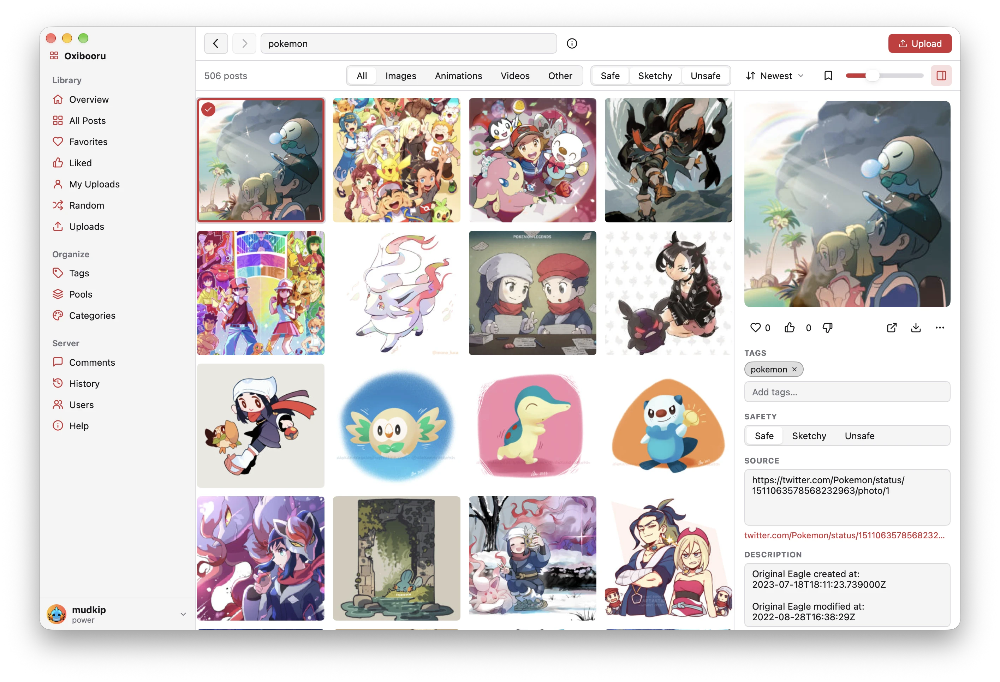

Browse & search
A responsive grid with tag autocomplete, the full search syntax, sorting, filters, and saved searches.
Maibooru is a fast, native app for browsing and organizing your Oxibooru or Szurubooru library. Free and open source.

A responsive grid with tag autocomplete, the full search syntax, sorting, filters, and saved searches.
Edit tags with implications and suggestions, ratings, sources, and pools — one post at a time or many at once.
Zoom and pan images, play videos and animations, open PDFs and Flash, and read notes and comments.
Drop or paste files, folders, and links to upload, with duplicate detection. Drag posts out into any other app.
Manage tags, categories, pools, comments, favorites, users, and history — across as many servers as you like.
Follows your system’s light or dark theme, keeps sign-ins in your keychain, and locks with a PIN or Touch ID.
Download Maibooru for your computer and open it.
Enter your server’s address, like https://booru.example.com.
Use your account, create one, or continue as a guest.
Free for macOS, Windows, and Linux.
Not yet signed. If SmartScreen appears, choose More info → Run anyway.
Uses GStreamer for video, WebKitGTK 4.1 for AVIF, JPEG XL, PDF, and Flash, and a Secret Service keyring to remember sign-ins.
Want the latest changes? Try the nightly build.